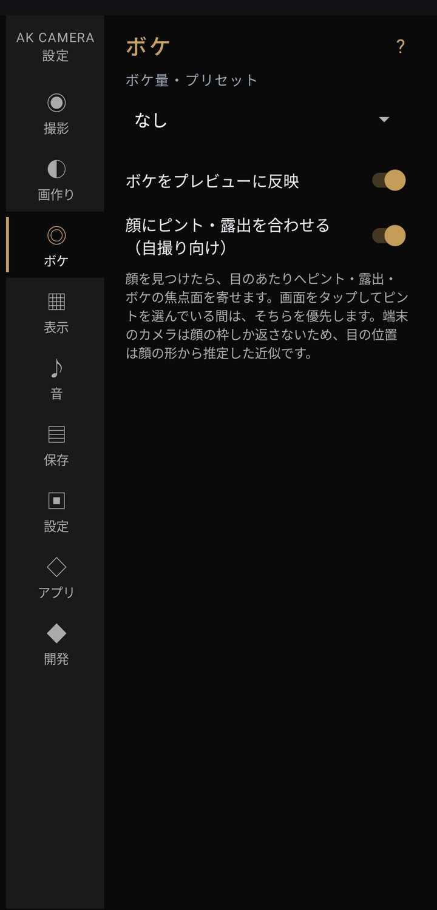

設定：ボケ

奥行きを端末の中で推定して、ピントの外をぼかす機能。
- ボケ量・プリセット初期値 なし
- なし / 弱 / 標準 / 強 / 最強 撮影画面の「仕上げ」にあるボケの量と同じです。推定には限界があり、髪の毛・ガラス・細いものの境目は背景と一緒にぼけることがあります。はじめは「弱」から試すのがおすすめです。ボケを使うと、保存までの時間が少し延びます。
- ボケをプレビューに反映初期値 ON
- 撮る前の画面にもボケを出します。プレビューが重いと感じる端末では OFF にしてください（写真には設定どおりボケが掛かります）。
- 顔にピント・露出を合わせる（自撮り向け）初期値 ON
- 顔を見つけたら、目のあたりへピントと明るさ、ボケの基準を寄せます。画面をタップしてピントを選んでいるあいだは、そちらを優先します。